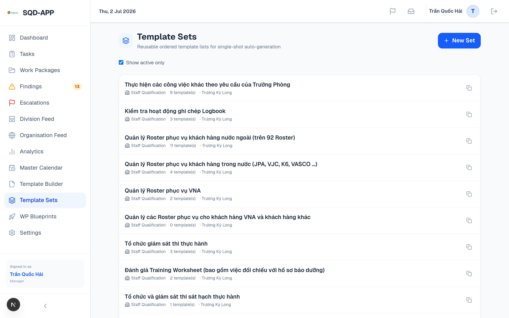
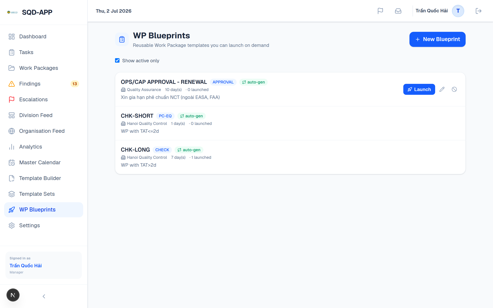
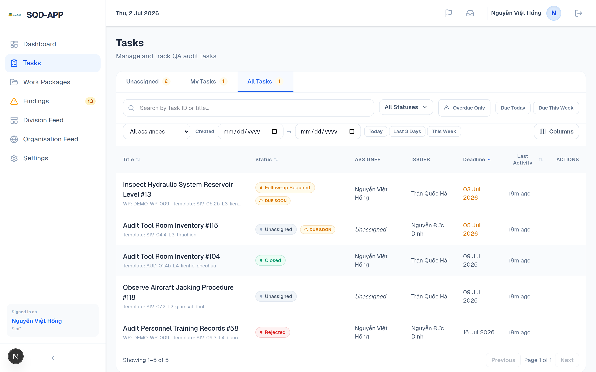
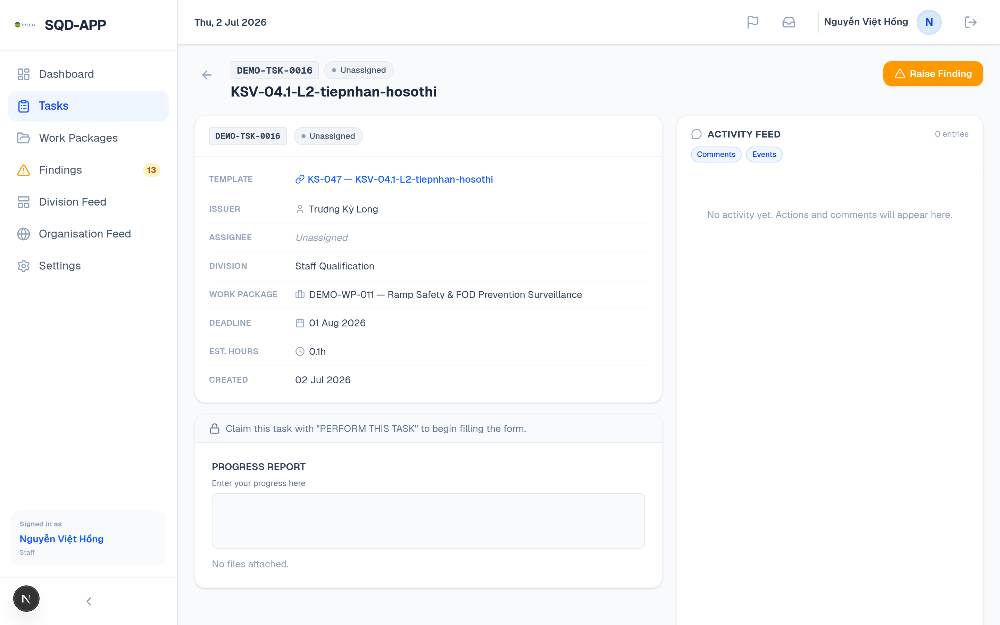

Aviation MRO · Quality Assurance & Control
SQD-APP
A full-stack platform for dynamic audit templates, work packages, task execution, findings, and corrective action — built to enforce compliance and keep an immutable, auditable record of every quality event.
Audience: Staff · Managers · Directors
Aesthetic: "The Technical Manual"
Live demo data: 30 WPs · 150 Tasks · 27 Findings
Introduction
What it is, and the design philosophy
An internal tool for a high-stakes, compliance-driven environment where errors have safety consequences.
🎯 Product purpose
- Manage audit templates, task assignment, inspections, findings, and work packages across the MRO org.
- Enforce compliance workflows and surface issues before they become safety incidents.
- Success = inspectors work without friction; managers trust the data they see.
🧭 "The Technical Manual"
- Authority through restraint — structure signals safety, decoration undermines it.
- Zero ambiguity on status — every task/finding/WP status readable in under one second.
- One Signal Rule — Blue means "act here"; status colours fire only on live conditions.
- A screen free of amber / red is itself a signal: the system is healthy.
Introduction
Technology & platform
Frontend
- Next.js 16 (App Router, React 19)
- Tailwind CSS v4, Zustand auth state
- TypeScript 5 strict, Axios
Backend
- Express 5, Node, TypeScript strict
- Prisma v6 ORM + Postgres adapter
- JWT auth, bcrypt, single-session tracking
- Jest + Supertest (~500 tests)
Data & compliance
- PostgreSQL — status machines enforced by DB CHECK constraints
- Soft-delete on all compliance records
- Dual audit: AuditLog + operational feed
Architecture
Data model — two clusters around the Task
Not a linear pipeline: Task is the hub, and Finding is both born from a task and resolved by new tasks (the corrective-action loop).
Task hub
Template
formSchema · draftSchema
│ 1 : N (schema snapshot copied at creation)
Task
schemaSnapshot · status(9)
▲ N : 1 wpId (optional)
WorkPackage
autoGenTemplateId → Template
Finding cluster
│ sourceTaskId ▼ ▲ parentFindingId
Finding
severity · status(5)
└─ RCA · CAPA · ATA chapter · Hazard tags
Every arrow is a real foreign key in schema.prisma · Task.templateId, Task.wpId, Finding.sourceTaskId, Task.parentFindingId.
Architecture
Schema & the three immutability guarantees
📸 Schema snapshot
Each Task stores an immutable schemaSnapshot at creation. Editing/deleting the Template never alters an in-flight task's form.
🗑️ Soft delete
Records with deletedAt are never physically removed. Evidence persists — an aviation compliance requirement.
📝 Dual audit
Every state change writes to both the system-wide AuditLog and the operational feed. AuditLog is the source of truth.
Core models (30+ total)
Template
Audit form + branching logic
Task
9-status execution unit
WorkPackage
Timeframed task container
Finding
Defect / quality event
RcaInvestigation
5-Whys / MEDA root cause
CapaAction
Corrective / preventive
TemplateSet
Reusable template bundle
WpBlueprint
Recurring WP recipe
FeedPost
Unified 5-scope feed
EscalationFlag
Escalation lifecycle
TimeBooking / TimeEntry
Budget vs actual, immutable
AuditLog
Immutable compliance log
Architecture
RBAC — view-transparent, action-scoped
The design decision that surprises people: everyone can see everything; only acting is restricted.
👁️ Viewing is open (safety transparency)
- Every authenticated user can view all Work Packages, Tasks and Findings — regardless of division or assignment.
- Awareness of ongoing work matters for safety in an MRO environment.
🔒 Acting is role & division scoped
- Review/approve/reject/reassign: Issuer + Director + Managers of the same Division.
- Assign to WPs / close them: Managers & Directors only.
- Privileges are database-driven (PrivilegeConfig) — Admin-tunable without a code change.
Role hierarchy
- Director / Admin — global visibility + global action rights.
- Senior Advisor — senior oversight, global dashboard visibility.
- Manager — division-scoped assign & review.
- Group Leader — create/assign in assigned WPs (division-scoped).
- Staff — perform assigned tasks; self-assign from the unassigned pool.
The interface is role-adaptive: a Staff sidebar and a Director sidebar differ meaningfully (see upcoming screens).
The Centrepiece
The end-to-end lifecycle
One narrative, followed across roles — the spine of the demo.
01
Template
Branching audit form; flags for approval & findings.
→
02
Work Package
Manager groups tasks; auto-generates from a template.
→
03
Execution
Staff perform tasks; raise findings.
→
04
Findings
Severity, follow-up tasks, RCA/CAPA.
→
05
Time + Review
Budget vs actual; approve / reject.
→
06
Closure
Director closes; analytics & audit trail.
Director "Operations Overview" — live seeded data: 53 pending tasks (19 overdue), 16 findings, active work packages, live activity feed.
Step 2A · Manager
Work Package setup & automatic task generation
- A WP groups tasks under a timeframe and type (CHECK, AUDIT, SURVEILLANCE, INVESTIGATION…).
- Any WP type can auto-generate tasks — from a single Template, a saved Template Set, or an inline set.
- Two modes: Single-shot (spawn once) and Repeat (every N days across the WP).
- First batch fires the moment the WP is saved — instant, not a background delay.
"Automatic Task Generation — spawn tasks from a template automatically, once or on a repeating cadence while the WP is active."
Step 2A · Manager
Reusable recipes — Template Sets & WP Blueprints
The "the system runs its routine audits itself" story: standardise once, launch repeatedly, or let a nightly cron auto-launch recurring routine WPs.


Template Sets (ordered bundles of templates) · WP Blueprints (pre-filled WP + auto-gen config + recurrence schedule).
Step 2B · Staff
Task execution & the self-serve pool
- Tasks arrive assigned, or sit Unassigned in a pool eligible Staff self-serve via "Perform This Task".
- Role-adaptive sidebar: Staff see a focused nav (no Analytics / Template Builder / Escalations).


Task list with the status-badge column (fixed position) · an unassigned task ready to be picked up.
Step 2B · Staff
Executing a task — snapshot form & status vocabulary
- The form renders from the task's immutable snapshot — it can never drift from a later template edit.
- Templates support Google-Forms-style branching ("Damage Found = Yes → show Upload Photo").
- 9-status machine: Unassigned In Progress In Review Follow-up Closed …
- A Raise Finding action is available when the template allows it.
Task detail — template link, issuer/assignee, WP, deadline, estimated hours, progress-report editor, activity feed.
Step 2C · Staff → Manager
Raising & routing findings
- Any user can raise a finding from a task (if the template allows findings and the task isn't final).
- A Manager/Director assigns severity — Observation Level 1 Level 2 — and a due date.
- Findings visibility follows RBAC: Directors see all, Managers their division, Staff only what they raised / were assigned.
- Sidebar badge counts Open + In Progress findings in scope.
Findings register — status & severity badges read in under one second.
Differentiator · Headline
Root Cause & Corrective Action (RCA / CAPA)
- RCA (1:1 with a finding): 5-Whys, MEDA contributing factors, or OTHER — concluding in a cause code.
- CAPA: corrective & preventive actions with owner, deadline, status; linked tasks must close before verify.
- Taxonomy & traceability: ATA chapters, hazard tags, finding-to-finding links, response actions (CAR/NCR/QN…).
- Trend detection: shared dept + ATA + cause + hazard tag fires a recurrence banner → systemic action.
Hero finding FND-000101 — "Recurrent pattern detected" banner, ATA chapter, hazard tags, Level 2 severity, full lifecycle.
Differentiator · Headline
Unified Feed & the Escalation loop
- One feed, five scopes: Task · Work Package · Division Board · Org Feed · Finding.
- Reading is open; posting is scoped. Any user can flag a comment to escalate it upward.
- Escalation posts a card at the target and info cards at every level in between — no skipped level is blind. Cards carry an excerpt + deep link, never full text (compliance).
- Only Directors/Admins & scoped Managers can action a flag; the header bell shows their pending count.
The Escalations queue — full history (Pending / Actioned / Dismissed) with reuse of existing workflows (Raise Finding, Create Task, Disseminate…).
Step 2D · Staff → Manager
Time booking & review
⏱️ Budget vs actual
- At a final state, the assignee logs actual hours (plus collaborators).
- If the template had estimatedHours, a budget-vs-actual badge appears.
- Exceeding 120% of estimate forces an over-budget reason.
- Each submission writes an append-only TimeEntry — an immutable revision trail.
✔️ Review rights (RBAC precision)
- Approve / Reject / Follow-up = Issuer + Director + Managers of the same Division.
- Not any manager. Not the issuer alone.
- Every action dual-writes AuditLog + feed system event.
- Reassignment allowed at any non-final stage (mandatory reason; all task data preserved).
📊 Efficiency surfaces to Analytics
- Managers & Directors see time-efficiency trends and per-staff performance.
- Scoped to division or system-wide.
Step 2E · Director
Oversight & analytics
- Directors close tasks & work packages; global action rights across all divisions.
- Analytics: Time Efficiency, Findings and Personnel tabs — staff avg rating, tasks rated, efficiency multiplier.
Staff Performance — average rating, tasks rated, and efficiency (green = ahead of estimate, red = behind).
Summary
What each role does
Staff
Perform the work
- Pick up unassigned tasks ("Perform This Task")
- Execute snapshot forms with branching logic
- Raise findings from tasks
- Log actual hours + collaborators
- Comment & flag on feeds
- View all work (transparency)
Manager
Plan & review (division-scoped)
- Create WPs, auto-generate tasks
- Build Template Sets & Blueprints
- Assign tasks / users within division
- Review: approve / reject / follow-up
- Triage findings: severity + follow-ups
- Action escalations in scope
- Division analytics
Director / Admin
Global oversight
- Global assign & review, everywhere
- Close tasks & work packages
- Action any escalation; moderate feeds
- System-wide findings & RCA/CAPA sign-off
- System-wide analytics & trends
- Configure privileges & settings
Workflow
Swimlane — task lifecycle across roles (all cases)
System · Staff · Manager · Director lanes — self-assign, review (segregation of duties), the finding loop, reassign, closure. Full-res PNG + Mermaid source in demo-assets/.
Workflow
Swimlane — Unified Feed & Escalation loop
Any user flags → the system posts cards → a Director/Admin or scoped Manager actions it → it connects back into the Findings / Task loops.
Governance
RBAC — the rules that matter most
The complete, code-verified list is in RBAC_RULES.md. The essentials:
Assignment & division scope
- Assign / reassign only to your own division — unless you hold assign_any (Director/Admin).
- Self-assign only from your own division's unassigned pool.
- WP membership lets you create/assign within that WP — still own-division-locked.
- Multi-division WP: only a Director/Admin can add out-of-division members; routing the work still stays division-scoped per actor.
Review, findings & escalation
- Review = Issuer + Director + Manager (same division). Admin is not a reviewer.
- The person who performed a task can never review it (segregation of duties).
- QN tasks require Director approval — overrides the Issuer exception.
- Manager reviews findings only within their division scope.
- Escalations: Director/Admin any; Manager own-division WP/Div + all Org.
Appendix
Live-demo runbook — exact click paths
- 1 · Groundwork — Slides 4–6 (ERD, schema, RBAC). Frame "view-transparent, action-scoped".
- 2A · Manager VAE00061 — Work Packages → New → toggle Automatic Task Generation → pick a Template → Create. Open the WP: tasks already spawned.
- 2B · Staff VAE00051 — Tasks → Unassigned → Perform This Task → fill the branching form → note the status badge → Submit.
- 2C · Findings — On a findings-enabled task → Raise Finding. As Manager: Findings → set severity + due → Generate follow-up task.
- 3 · RCA/CAPA — Findings → open FND-000101 (hero) → recurrence banner, ATA/hazard tags, RCA (5-Whys/MEDA) + CAPA.
- 3 · Escalation — Any feed → flag a comment → header bell → Escalations page → action it (Acknowledge / Create Task / Disseminate).
- 2D · Time + Review — On a Closed task → book hours (budget vs actual). As Issuer/Manager → Review → Approve / Reject / Follow-up.
- 2E · Director VAE00071 — Close the Work Package → Analytics (Time Efficiency / Personnel).
Accounts password Demo@12345 · set DISABLE_RATE_LIMIT=true in backend/.env for rapid multi-role logins.
Wrap-up
Everything traces back to the audit log
Every status change, time entry, escalation and closure shown today landed in the immutable AuditLog — the compliance backbone that lets managers trust the data.
9
Task statuses, DB-enforced
6
Roles, DB-driven privileges
Demo accounts (password Demo@12345): Director VAE00071 · Manager VAE00061 · Staff VAE00051 · seeded via seed-mass-mockup-v2.ts